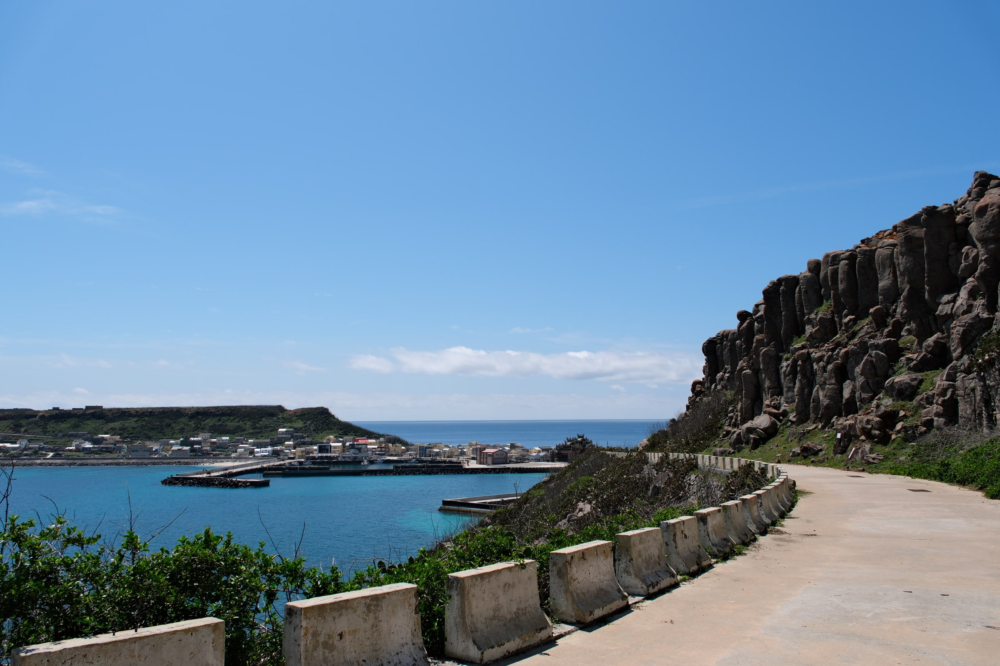
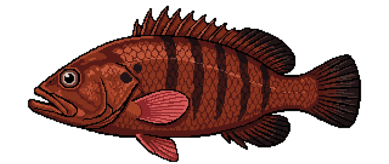
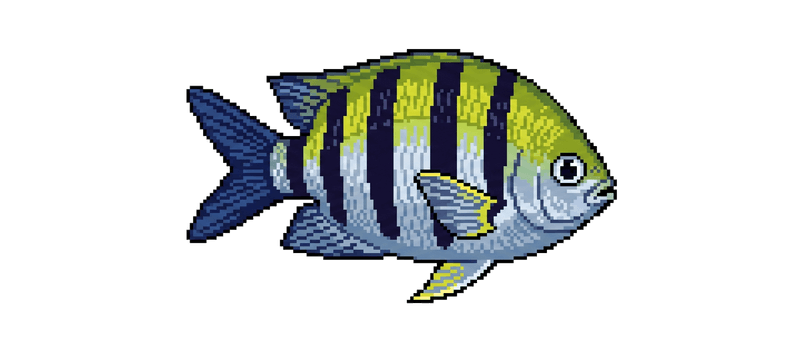
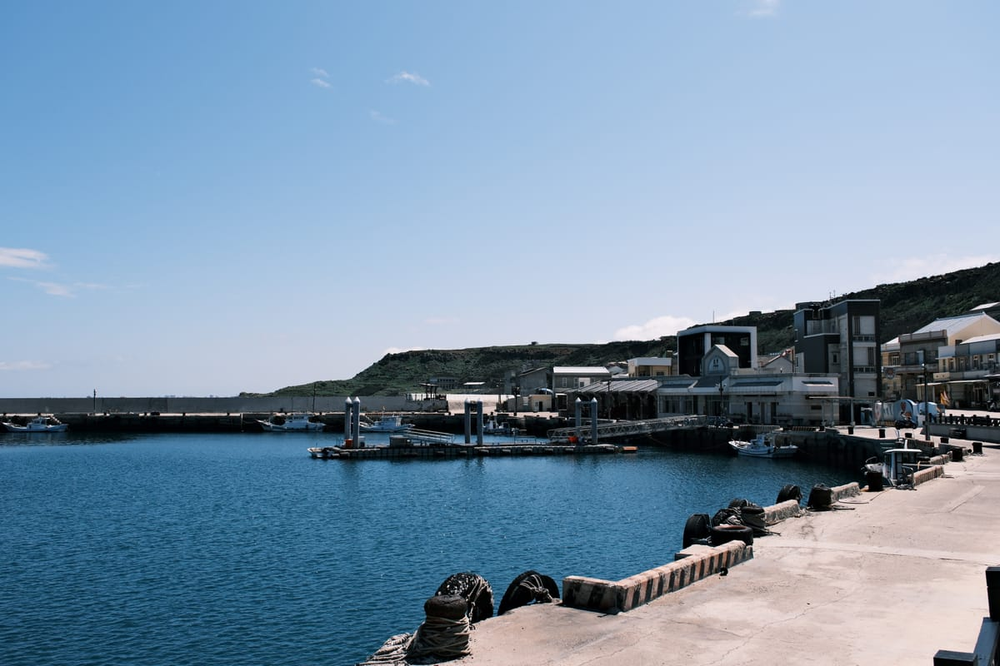
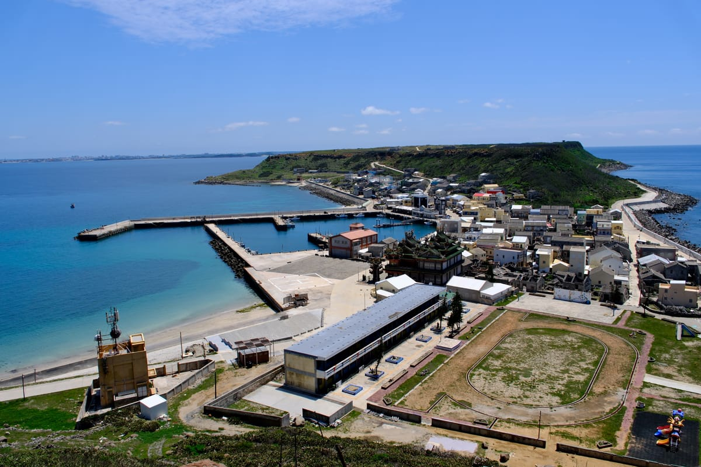
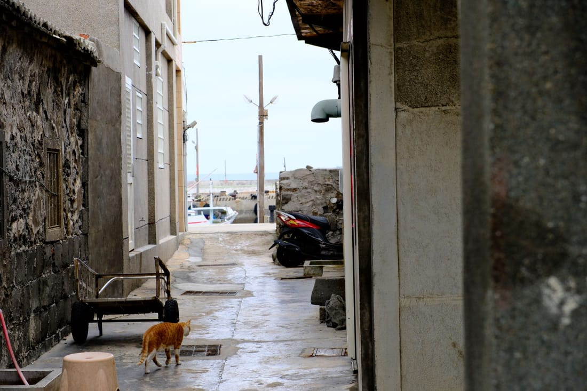
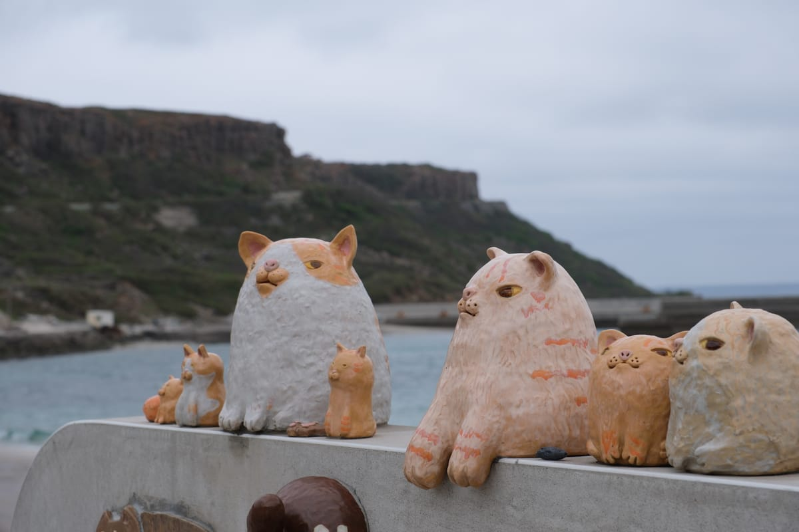

一艘小船，釣起人生第二春。
退休不是終點，而是新起點。爸爸買下一艘小船，回到熟悉的澎湖虎井嶼——每天觀海況、等潮汐，迎著海風出海。
他不追求大量捕撈，只專注於一竿一線的耐心對話。今天海裡有什麼，我們就分享什麼。
魚上岸後，媽媽把每一批漁獲三去、真空、冷凍，仔細整理好，宅配到你家。我們想做的，是把「虎井嶼海邊最鮮的那一刻」原封不動送給你——來源清楚、無藥水、魚體完整。

把虎井嶼的海味，鎖鮮宅配到你家餐桌。
今天海裡有什麼，我們就賣什麼。
why us
手釣、三去、真空、冷凍——不是空喊「新鮮」，而是每一步都說得出道理。
逐隻釣上，沒有網具擠壓、沒有掙扎乳酸，魚體完整、肉質純淨緊實。
去鱗、去鰓、去內臟並洗淨血水，真空隔絕空氣，截斷九成腥味來源。
上岸當日處理、真空後冷凍保存，解凍不易出水，口感接近現撈。
連袋沖水解凍、擦乾就能下鍋，免去鱗掏內臟的髒亂，新手也不怕。
黑潮支流與澎湖海流在虎井海域交匯，帶來豐沛的營養鹽與洄游魚群。
魚群終年對抗強勁海流、活動量大，造就虎井海鮮特有的緊實彈牙。
遠離大型工業區與都市排放，海水乾淨，是這片海最踏實的底氣。
in season
跟著澎湖的海走，當季才出。每種魚的肉質、吃法我們都講得出來。

盛產期肉質最脆甜，川燙冰鎮、快炒或夜釣現吃都對味。

秋季水溫適中，肉質Ｑ彈、魚皮膠質豐厚，清蒸或煮湯最能吃到鮮甜。

夏季產季，肉質細軟鮮甜；乾淨的白肉，鹽烤、香煎特別香。

又名寒鯛，肉質清甜、肉多刺少，魚頭富含膠質，煮薑絲魚湯一絕。

澎湖俗名「黑青貓仔」，一支釣釣上的小型石斑；肉質鮮美細緻，煮薑絲湯或清蒸最能吃到那股鮮。

澎湖俗名「花翎仔」，礁岩區常見小魚、體側五條橫帶；適合酥炸、乾煎或煮味噌湯，鹹香下飯。
| 魚種 | 產季 | 特色與吃法 |
|---|---|---|
| 水針魚 | 春 | 細長銀亮的表層魚，肉質細緻少油；酥炸、鹽烤最對味。 |
| 青嘴魚（龍占） | 夏～秋 | 礁岩高級魚，肉質細嫩鮮甜，清蒸或煮湯最能吃出原味。 |
| 鸚哥魚 | 夏 | 色彩鮮豔的珊瑚礁魚，肉厚清甜、油脂少；清蒸、煮湯皆宜。 |
| 臭肚魚（象魚） | 秋～冬 | 澎湖冬季代表魚，帶特殊海藻香；薑絲酸菜湯或乾煎最經典。 |
| 黑點魚 | 夏～秋 | 肉質扎實、味道乾淨，香煎、鹽烤都好。 |
| 雀鯛 | 夏 | 礁區小型魚，肉質緊實；酥炸或香煎，連骨都酥。 |
cook & keep
收到之後這樣做，鮮度與口感不打折。選一個看：
這一段最重要。沒清乾淨就下鍋，再新鮮也會有腥味；而那片像塑膠的東西是牠的軟骨，一定要抽掉。
整包未拆封泡在自來水下、開小小的水流。不要泡熱水、不要用微波，會把外層燙熟、肉質變韌。趕時間也請忍住。
一手抓身體、一手抓頭（有觸腳那端），慢慢往外拉，內臟和墨囊會連著頭一起出來。想留墨汁就小心別弄破。
身體裡面有一片透明、硬硬的長條，摸起來很像塑膠片——那是小管的軟骨（俗稱透明骨）。從開口摸到後直接抽出來丟掉，這不是包裝材料，是牠身體的一部分。
身體內側翻一下沖掉殘留內臟，外皮想吃更白可以撕掉（不撕也沒關係）。下鍋前務必擦乾，濕的會噴油、也炒不香。
重點只有一個：別煮過頭。時間依大小調整。
| 煮法 | 時間 | 訣竅 |
|---|---|---|
| 川燙冰鎮 | 2–3 分鐘 小隻的 40–60 秒 | 清好內臟才下鍋。水滾再下，變白捲起、摸起來有彈性就撈，立刻冰鎮 30 秒，最脆最甜。 |
| 清蒸 | 5–7 分 | 鋪薑絲蔥段，大火蒸，起鍋淋一點醬油與麻油。 |
| 三杯 | 3–5 分 | 麻油爆薑蒜，下小管快炒，最後放九層塔即起鍋。 |
| 鹽烤 | 6–10 分 | 表面擦乾、抹薄鹽，中火兩面各烤一下，別烤到縮水。 |
| 炒芹菜 | 2–3 分 | 大火快炒，芹菜斷生就起鍋，保持脆度。 |
| 沙茶炒 | 2–3 分 | 沙茶醬先化開再下鍋，避免糊底。 |
| 米粉湯 | 最後 1 分 | 湯頭煮好、米粉快熟時才下小管，久煮會變硬。 |
整包未拆封直接泡自來水、開微小水流，約 15 分鐘就退冰（約 10–20 分鐘，最推薦）。
拆封後用廚房紙巾把魚體表面與腹腔血水徹底擦乾，去掉大部分腥味來源。
解凍後當天料理完畢，別再丟回冷凍庫，否則細菌倍增、肉質變柴。
| 煮法 | 推薦魚種 |
|---|---|
| 清蒸 / 煮湯 | 石斑、青嘴魚、鸚哥魚、石老魚（肉質細嫩鮮甜） |
| 香煎 / 鹽烤 | 黃雞魚、黑點魚、雀鯛、水針（油脂適中、肉質扎實） |
| 酥炸 / 乾煎 | 水針、條紋豆娘魚、雀鯛（小型魚，連骨都酥） |
| 煮湯 / 乾煎 | 臭肚魚（薑絲酸菜湯或乾煎） |
| 魚種 | 建議保存 |
|---|---|
| 石斑魚 | 8–12 個月 |
| 石老魚 | 8–12 個月 |
| 臭肚魚 | 6–8 個月 |
| 鸚哥魚 | 6–8 個月 |
| 雀鯛 | 6–8 個月 |
| 水針魚 | 4–6 個月 |
| 小管 | 1–2 個月內優先吃完（軟體易變韌） |
island diary
island diary．島上的事、海上的事，還有那些只有在這裡才知道的細節。
about us
一艘小船，釣起人生第二春。
退休不是終點，而是新起點。爸爸買下一艘小船，回到熟悉的澎湖虎井嶼——每天觀海況、等潮汐，迎著海風出海。
他不追求大量捕撈，只專注於一竿一線的耐心對話。今天海裡有什麼，我們就分享什麼。
魚上岸後，媽媽把每一批漁獲三去、真空、冷凍，仔細整理好，宅配到你家。我們想做的，是把「虎井嶼海邊最鮮的那一刻」原封不動送給你——來源清楚、無藥水、魚體完整。


島上巷弄、港邊到處是曬太陽的貓，還有一整排陶土貓看著海。我們的吉祥物「虎井港邊貓」，就是牠們——一隻虎斑貓，陪著這片海。


出貨方式：7-11 冷凍交貨便（滿 2,000 免運）或黑貓低溫宅配（滿 3,600 免運）。